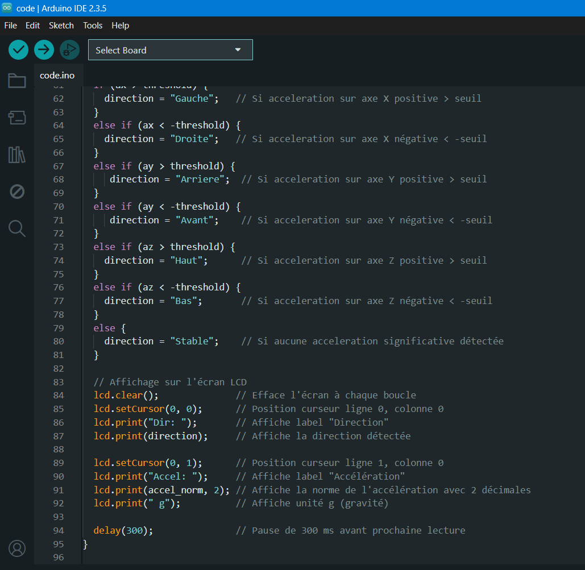
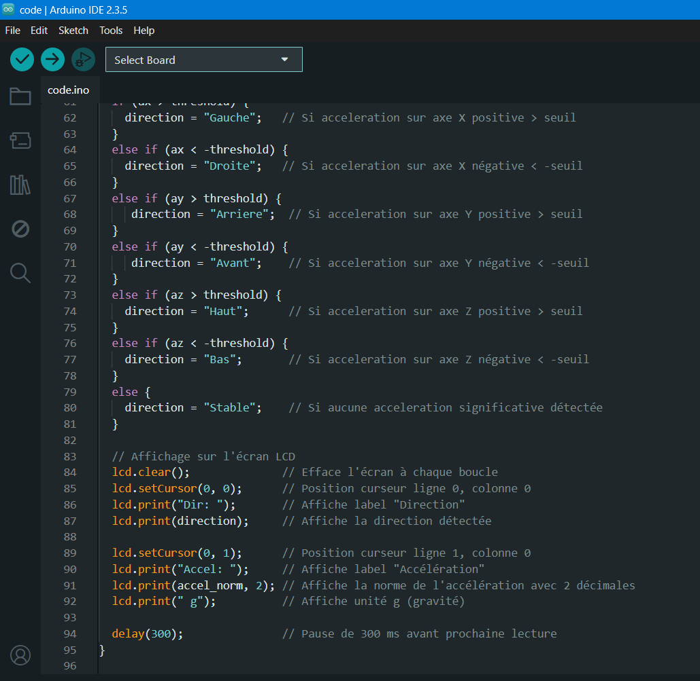
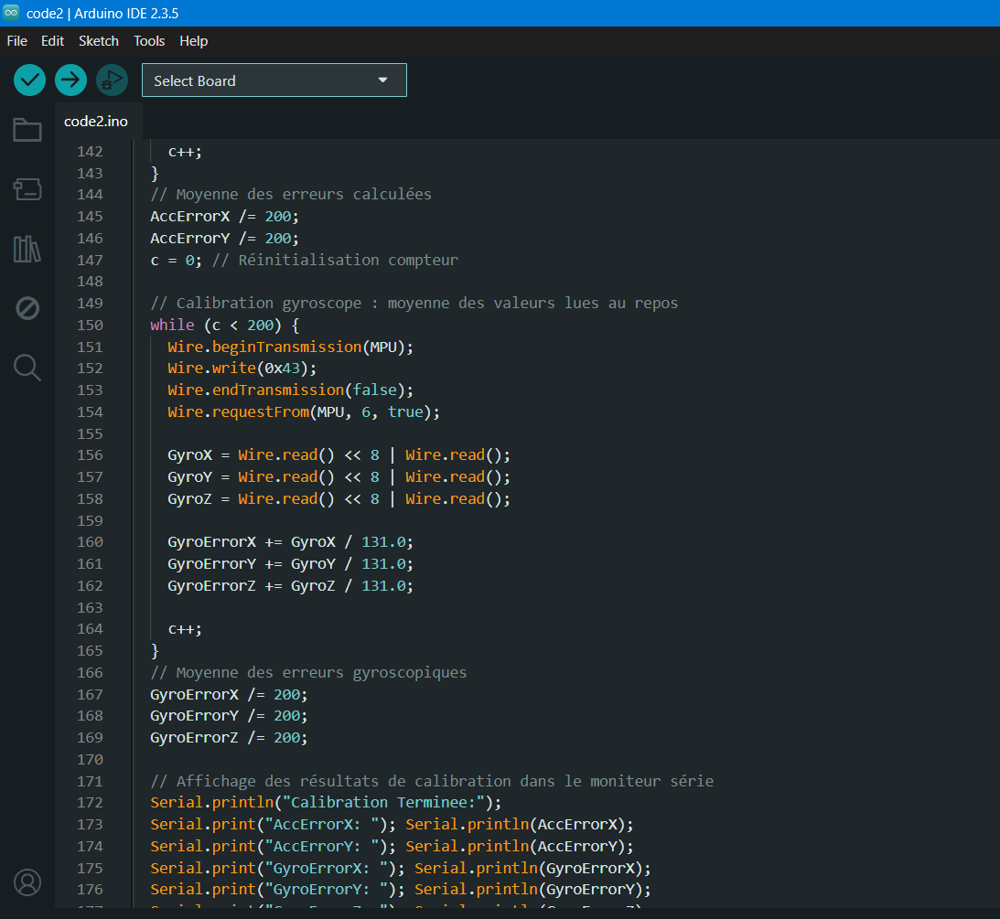
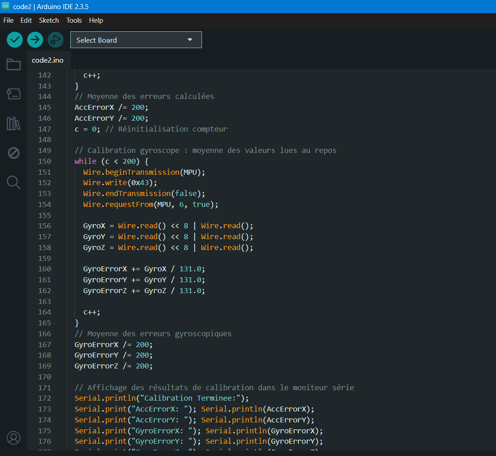
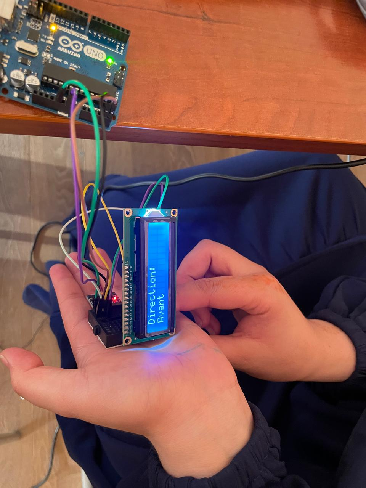
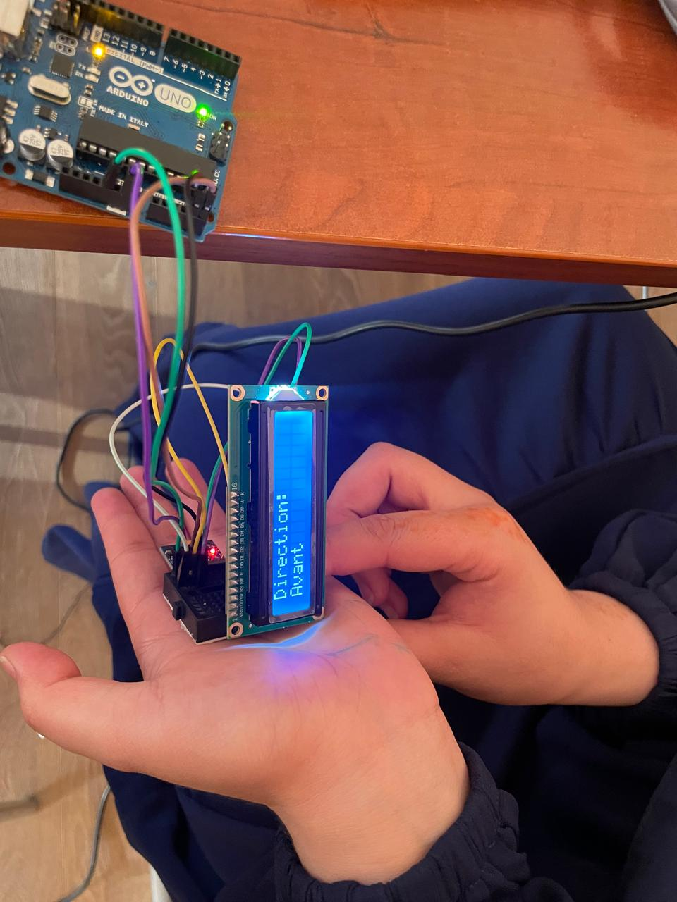

Projet Gyroscope et Accéléromètre MPU6050
1. Contexte et objectifs:
Les données de navigation telles que la direction et l'accélération sont essentielles dans la conception d’un robot. Ce projet utilise un module MPU6050, combinant un gyroscope et un accéléromètre, pour mesurer l’orientation et les mouvements.
Ce projet a pour objectif de :
- Comprendre le fonctionnement d’un capteur inertiel (IMU).
- afficher en temps réel les directions (haut, bas, gauche, droite) ainsi que les données d’accélération sur un écran LCD.
- Utiliser le protocole de communication I2C.
- Appliquer les bonnes pratiques de conception logicielle (structure modulaire, classes bien définies, etc.).
2. Choix du capteur : MPU6050
Le MPU6050 est un capteur IMU (Inertial Measurement Unit) 6 axes qui combine :
- Un accéléromètre 3 axes
- Un gyroscope 3 axes
Il utilise une interface I2C, parfaitement compatible avec les microcontrôleurs comme l’Arduino, ce qui facilite la lecture des données avec un minimum de fils et une consommation réduite.
Il est largement utilisé dans la communauté Arduino, avec de nombreuses bibliothèques disponibles (comme MPU6050.h ou Wire.h), ce qui simplifie le développement et le débogage
Caractéristiques principales : datasheet du MPU6050
- Interface I2C (adresse par défaut : `0x68`)
- Plage de mesure accéléromètre : ±2g, ±4g, ±8g, ±16g
- Tension d’alimentation : 3.3V – 5V
3. Principe de fonctionnement
Le capteur MPU6050 combine deux fonctions principales : un accéléromètre et un gyroscope. L’accéléromètre permet de mesurer l’accélération linéaire sur les trois axes (X, Y, Z), ce qui permet de détecter les mouvements de la main vers le haut, le bas, la gauche, la droite, l’avant ou l’arrière. De son côté, le gyroscope mesure la vitesse angulaire sur ces mêmes axes, ce qui permet de connaître l’orientation de la main, comme une inclinaison ou une rotation.
Pour transmettre les données au microcontrôleur, le MPU6050 utilise le protocole de communication I2C. Ce protocole est simple et efficace, car il ne nécessite que deux fils : la ligne SCL (pour l’horloge) et la ligne SDA (pour les données). Grâce à cette liaison, le microcontrôleur peut envoyer des commandes au capteur et lire ses valeurs en temps réel.
Pour que le MPU6050 envoie les données, il ne suffit pas de simplement le connecter. Étant donné qu’on utilise une communication I2C, il faut suivre un protocole bien défini :
a. Envoi d’une commande au capteur
Avant de lire une donnée, l’Arduino doit envoyer l’adresse du registre souhaité. Cette adresse indique quel type de donnée on veut (accélération, vitesse angulaire)

b. Structure des données reçues
Chaque mesure (accélération ou rotation) est codée sur 16 bits (2 octets) :
- 8 bits MSB (poids fort)
- 8 bits LSB (poids faible)
Les valeurs sont en complément à deux (signed integer), ce qui permet d'indiquer un sens positif ou négatif du mouvement.
c. Conversion des données brutes
Pour exploiter les mesures, il faut les convertir en unités physiques :
- Accélération en g (gravité terrestre)
- Rotation en °/s (degrés par seconde)
4. Schéma électronique sous KICAD
5. Codage : lien vers les codes
a. Code 1:
Ce code utilise les librairies existantes sur Arduino IDE.
 

a. Code 2:
Ce code n'utilise pas les librairies existantes sur Arduino IDE pour le capteur.


 

6. Conception d'un prototype et démonstration
 


7. Remarques
- Pour des lectures plus stables et précises, il est possible d'intégrer un filtre complémentaire ou un filtre de Kalman.
- Ce projet constitue une excellente base pour des systèmes plus avancés, tels que les contrôleurs, les robots auto-équilibrés ou les plateformes de stabilisation.
8. Conclusion
Ce projet nous a permis d’explorer l’intégration d’un capteur inertiel dans un système embarqué, ainsi que de mettre en œuvre la détection et l’affichage en temps réel des mouvements de la main.
Le module MPU6050 s’est révélé être un outil efficace et accessible pour la détection de l’orientation et des mouvements.
Grâce à sa compatibilité avec l’écosystème Arduino et à la disponibilité de bibliothèques dédiées, le MPU6050 peut être facilement intégré dans divers projets éducatifs ou de prototypage.
L’affichage des directions détectées et des valeurs d’accélération sur un écran LCD 16x2 offre une visualisation claire et pédagogique, idéale pour l’apprentissage des capteurs, de la programmation de microcontrôleurs et des interfaces homme-machine.
Au-delà de son intérêt pédagogique, ce système peut être étendu à des applications telles que le contrôle par gestes, la réalité virtuelle ou la robotique, avec la possibilité d’ajouter une communication Bluetooth ou Wi-Fi pour renforcer l’interactivité.
Test 2
Contenu du Test 2 :
Test 3
Contenu du Test 3 :